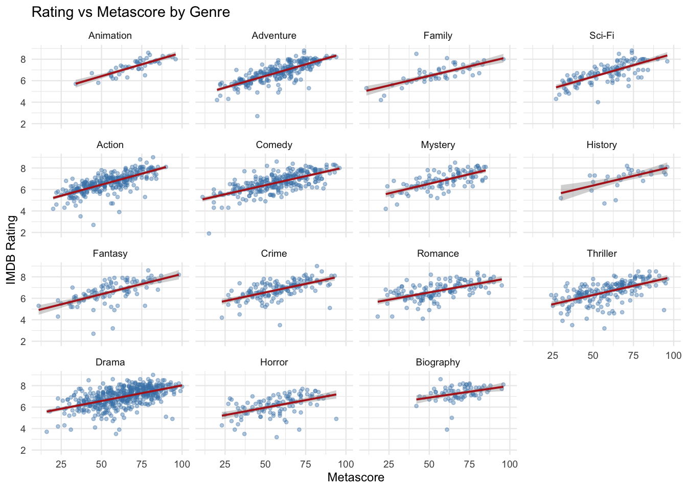

library(reticulate)
library(tidyverse)
library(here)
use_virtualenv(here(".venv"), required = TRUE)A Little Analysis with Python & R
Do critics and audiences actually agree?
I’ve been playing around with the IMDB dataset again, this time with both Python and R.
The question this time is a little more interesting than simply asking which movies have the highest ratings:
Do critics and audiences generally agree on which movies are good?
The dataset gives us two useful numbers for this:
- IMDB Rating — the audience rating for a movie.
- Metascore — an aggregate score based on professional critics’ reviews.
If the two tend to move together, we’d expect movies with high Metascores to also have high IMDB ratings.
But I was also curious whether that relationship changes depending on the genre.
So, rather than calculating one correlation for the entire dataset, I’m going to break it down by genre and see what happens.
Data Reading & Setup
This time I’m using both R and Python.
R handles the overall setup and visualization, while Python does the initial data manipulation. reticulate lets the two environments talk to each other, which means I don’t have to choose between them.
The dataset is available online, but I’ve also kept a local copy as a fallback. That way the analysis doesn’t completely fall apart if the remote CSV happens to be unavailable.
import pandas as pd
import matplotlib.pyplot as plt
url = "https://raw.githubusercontent.com/prasertcbs/basic-dataset/refs/heads/master/IMDB_Movie_1000_Data.csv"
local_path = "../../data/IMDB_Movie_Data.csv"
try:
df = pd.read_csv(url)
except Exception as e:
df = pd.read_csv(local_path)
df.head() Rank Title ... Revenue (Millions) Metascore
0 1 Guardians of the Galaxy ... 333.13 76.0
1 2 Prometheus ... 126.46 65.0
2 3 Split ... 138.12 62.0
3 4 Sing ... 270.32 59.0
4 5 Suicide Squad ... 325.02 40.0
[5 rows x 12 columns]There’s something mildly satisfying about being able to use Python and R in the same notebook.
I’m still figuring out exactly where I prefer one over the other, so for now this is partly an analysis and partly an excuse to experiment with the tooling.
Rating vs Metascore by Genre
df_clean = df.dropna(subset=['Rating', 'Metascore']).copy()
df_clean['Genre'] = df_clean['Genre'].str.split(',')
df_long = df_clean.explode('Genre')
df_long['Genre'] = df_long['Genre'].str.strip()
genre_counts = df_long['Genre'].value_counts()
common_genres = genre_counts[genre_counts >= 20].index
df_common = df_long[df_long['Genre'].isin(common_genres)]There’s another small transformation here that we’ve seen before.
Movies can belong to multiple genres, so the Genre column contains values such as:
Action, Adventure, Sci-Fi
I’m splitting those apart and using explode() so that a movie can be included in each of its genres.
I’m also limiting the analysis to genres with at least 20 observations. The cutoff is somewhat arbitrary, but it avoids putting too much weight on genres with very few movies.
Now we can calculate the correlation between IMDB Rating and Metascore separately for each genre.
corr_by_genre = (
df_common.groupby('Genre')
.apply(lambda g: g['Rating'].corr(g['Metascore']), include_groups=False)
.sort_values(ascending=False)
.reset_index(name='correlation')
)
corr_by_genre Genre correlation
0 Animation 0.817732
1 Adventure 0.778899
2 Family 0.744913
3 Sci-Fi 0.733023
4 Action 0.709832
5 Comedy 0.685347
6 Mystery 0.682622
7 History 0.644378
8 Fantasy 0.629339
9 Crime 0.597041
10 Romance 0.582775
11 Thriller 0.572476
12 Drama 0.551772
13 Horror 0.490730
14 Biography 0.359408The correlation coefficient gives us a compact way of describing how strongly two variables move together.
A value close to 1 means that higher Metascores tend to be associated with higher IMDB ratings. A value close to 0 means that there isn’t much of a linear relationship. And a negative value would indicate that the two tend to move in opposite directions.
But a correlation coefficient on its own is a little abstract.
I’d much rather see the actual movies represented as points.
So this is where R comes back in.
df_common_r <- py$df_common
corr_by_genre_r <- py$corr_by_genre %>% as_tibble()
df_common_r <- df_common_r %>%
mutate(Genre = factor(Genre, levels = corr_by_genre_r$Genre))
ggplot(df_common_r, aes(x = Metascore, y = Rating)) +
geom_point(alpha = 0.4, color = "steelblue", size = 1) +
geom_smooth(method = "lm", color = "firebrick", se = TRUE, linewidth = 0.7) +
facet_wrap(~ Genre, ncol = 4) +
labs(title = "Rating vs Metascore by Genre",
x = "Metascore", y = "IMDB Rating") +
theme_minimal(base_size = 9)
This is probably the most useful part of the analysis.
Each point represents a movie, with its Metascore on the x-axis and its IMDB Rating on the y-axis.
The fitted line gives us a rough sense of the direction of the relationship, while the individual points show how much variation there is around it.
If the line slopes upward, that means higher Metascores tend to be associated with higher IMDB ratings for that genre. And, as expected, the points aren’t sitting neatly on the line.
Even if critics and audiences generally agree, they clearly don’t agree on every movie. There are movies that critics rate relatively highly while audiences are less enthusiastic about them, and presumably the reverse happens too.
Instead of asking whether critics and audiences agree in general, we can ask whether that agreement appears stronger or weaker in different parts of the dataset.
It also doesn’t mean that critics’ scores somehow determine audience ratings, or vice versa.
It just tells us that the two measurements tend to move together to some degree.
A small Python–R experiment
Sometimes it’s useful to have more than one way of saying the same thing.
Python handled the data loading, cleaning, reshaping, and correlation calculation. Then reticulate exposed those Python objects to R, where I used ggplot2 to build the visualization.
There is obviously nothing stopping me from doing the entire analysis in either language.
One of the nice things about working with multiple tools is that you start noticing that the underlying ideas are much more important than the syntax.
Grouping data, handling missing values, calculating a correlation, and visualizing a relationship are the same analytical steps whether I’m writing them in Python or R.
The syntax just happens to be different.
What I took away
The most interesting part of this analysis wasn’t really the correlation itself.
It was the reminder that two numbers measuring the same thing from different perspectives don’t necessarily agree perfectly.
Critics and audiences are answering slightly different questions.
A critic’s score reflects professional reviews aggregated into the Metascore, while an IMDB rating reflects the opinions of the site’s users. Even when they’re evaluating the same movie, they’re not necessarily evaluating it in exactly the same way.
The genre breakdown makes that difference a little more visible.
And from a data-analysis perspective, this was a nice little exercise in going from:
a question → some cleaning → a statistic → a visualization → a more careful interpretation.
Which, at least for now, is probably more useful than trying to squeeze some grand conclusion out of 1,000 movies.